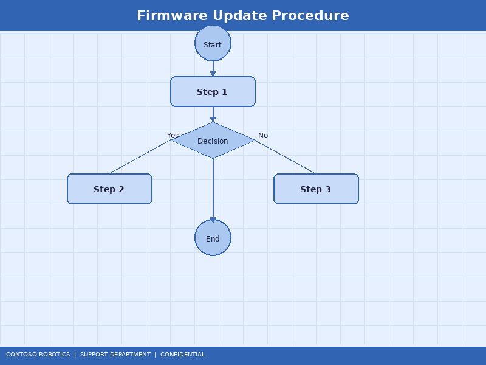
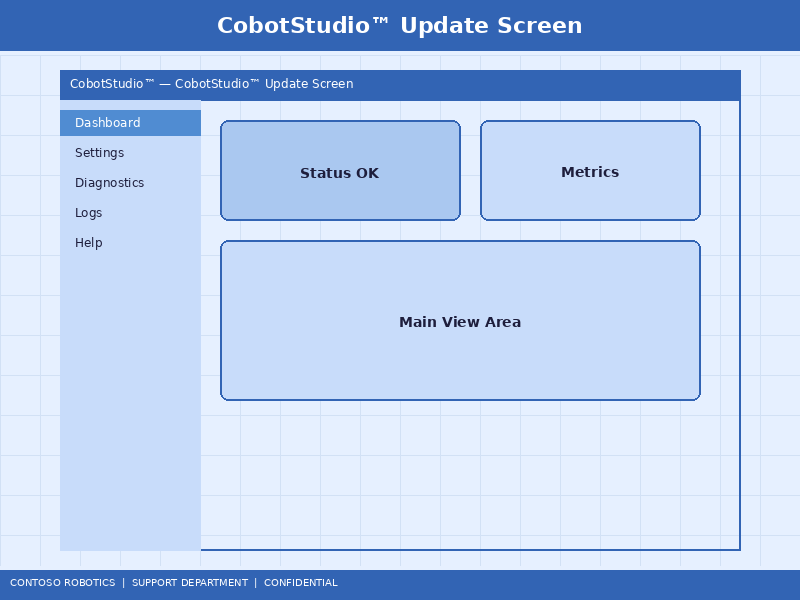

CoBot Pro Firmware Update Procedure
This document describes the procedure for updating firmware on the CoBot Pro 500 and CoBot Pro 700 platforms, including the main CoBot OS, joint servo drives, and Safety Controller SC-100. Firmware updates deliver bug fixes, performance improvements, and new features. For a detailed changelog of the latest release, refer to the Firmware Release Notes v4.2.0 in the Engineering documentation.
1. Pre-Update Checklist
Complete every item before starting the update process. Skipping these steps may result in data loss or an unrecoverable system state.
- ☐ Back up the current robot configuration: Settings → Backup → Full System Backup (saves to USB drive or network share)
- ☐ Back up all user programs: File → Export All Programs (creates a .cbp archive file)
- ☐ Export the safety configuration: Safety → Export Configuration (requires safety password)
- ☐ Record the current firmware versions:
- CoBot OS: Settings → About → System Version
- Joint servo firmware: Diagnostics → EtherCAT → Servo Firmware Versions
- SC-100 firmware: Safety → About → Controller Firmware
- ☐ Verify battery levels on all joint absolute encoders are >2.9 V (Diagnostics → Encoder → Battery Status)
- ☐ Ensure the robot is in its home position with no payload attached
- ☐ Connect the control cabinet to a UPS or ensure stable power for the duration of the update (approximately 30 minutes)
- ☐ Notify all operators that the robot will be offline during the update

2. Downloading Firmware
Firmware packages are available through two channels:
- Online update (recommended): If the control cabinet has internet access, navigate to Settings → System Update → Check for Updates. CoBot OS will download the latest firmware bundle directly from the Contoso Robotics update server (updates.contoso-robotics.com, port 443).
- Offline update: Download the firmware bundle (.cbfw file) from the Contoso Robotics Partner Portal. Copy it to a USB drive (FAT32 formatted, minimum 4 GB). Insert the USB drive into the front panel USB-A port on the control cabinet.
The firmware bundle contains three components:
- CoBot OS image: The main operating system and application software (~1.2 GB)
- Servo firmware package: Individual firmware images for each joint's servo drive (~50 MB total)
- SC-100 safety firmware: The Safety Controller firmware with dual-image redundancy (~15 MB)
3. CoBot Studio Update Wizard
The update wizard guides you through the installation process:

- Open CoBot Studio IDE on the teach pendant or desktop PC (connected to the robot).
- Navigate to Tools → Firmware Update Wizard.
- The wizard displays the current and target versions for each component. Review the release notes summary.
- Select which components to update. You can update individual components or all three simultaneously.
- Click Start Update. The wizard performs the following sequence:
- Validation: Verifies the firmware bundle integrity (SHA-256 checksum) and compatibility with the robot model.
- CoBot OS update: Installs the new OS image to the inactive partition (A/B partition scheme). Duration: ~10 minutes.
- Servo firmware update: Flashes each joint servo drive sequentially via EtherCAT. Duration: ~2 minutes per joint (12 minutes for a 6-axis robot).
- SC-100 firmware update: Flashes the safety controller using the secure boot protocol with cryptographic signature verification. Duration: ~5 minutes.
- System restart: The robot reboots into the new firmware. Boot time: ~60 seconds.
- After the restart, the wizard runs the Post-Update Validation automatically (see Section 5).
Warning: Do not power off the robot or disconnect cables during the update process. An interrupted servo firmware flash may require a factory recovery procedure.
4. Rollback Procedure
If the update causes issues, you can roll back to the previous firmware:
- CoBot OS rollback: Navigate to Settings → System Update → Rollback. The system reboots from the previous partition (A/B scheme). This is available for 30 days after an update.
- Servo firmware rollback: Use the Firmware Update Wizard and select the previous version from the USB drive. Alternatively, the previous servo firmware is cached in
/opt/cobot/firmware/servo-backup/ for 90 days.
- SC-100 rollback: Navigate to Safety → Firmware → Rollback. The SC-100 maintains two firmware images (active and backup). Enter the safety password to authorize the rollback.
After any rollback, restore the configuration backup taken in Section 1 and recalibrate if prompted.
5. Post-Update Validation
The post-update validation suite runs automatically but can also be triggered manually from Diagnostics → Post-Update Check:
- Version verification: Confirms all components are running the expected firmware versions.
- Joint communication test: Verifies EtherCAT communication with all servo drives (error-free for 10 seconds).
- Safety function test: The SC-100 performs a self-test of all safety functions (E-Stop, STO, SLS, SLP).
- Calibration check: Compares current joint positions against stored calibration data. If deviation exceeds 0.1°, recalibration is recommended.
- Program compatibility check: Scans all user programs for API changes that may require migration. Incompatibilities are listed in the validation report.
The validation report is saved to /var/log/cobot/update-validation-[timestamp].json and can be exported from CoBot Studio IDE.
6. SC-100 Safety Controller Update Notes
The SC-100 firmware update has additional requirements due to its safety certification:
- The safety firmware is cryptographically signed by Contoso Robotics. Unsigned or modified images are rejected.
- After updating the SC-100, the safety configuration must be re-validated. The system will prompt for a safety validation restart.
- The SC-100 audit log records the firmware update event, including the old and new versions, timestamp, and user ID.
- If the SC-100 firmware version is incompatible with the CoBot OS version, the system will refuse to operate and display error S-010 (Safety Firmware Version Mismatch).
For detailed information about the SC-100 safety firmware architecture and cryptographic verification process, refer to the Safety Controller Firmware in the Engineering documentation.
Document version 4.2.0 | Last updated: 2025-01-15 | Contoso Robotics Technical Support